Exhibitions
|
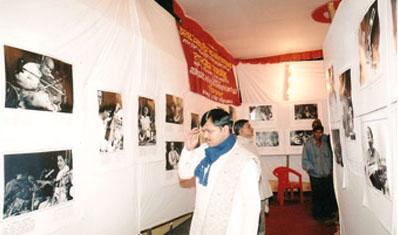
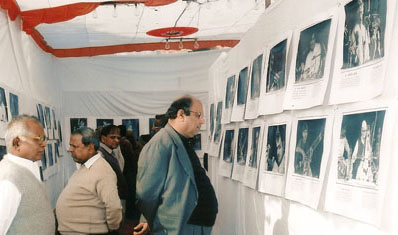
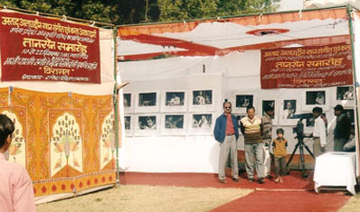
'VIRASAT' Exhibition on the occasion of "Tansen Sangeet Samaroh" organised by Alauddin Khan Sangeet & Kala Academy Bhopal - December 2003 Gwalior. |
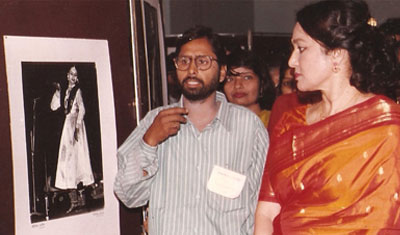
Kathak Dance Photo Exhibition on Occasion of Legendary Lachchu Maharaj's Birthday - 01.09.1996 - Lucknow |
|
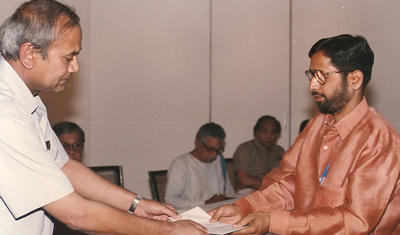
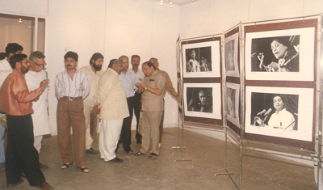
Exhibition on Occasion of "Cultural Journalism Workshop" organised by "Sanskar Bharti" U.P. - 1997 Lucknow. |
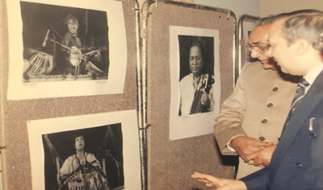
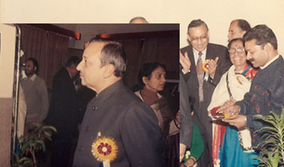
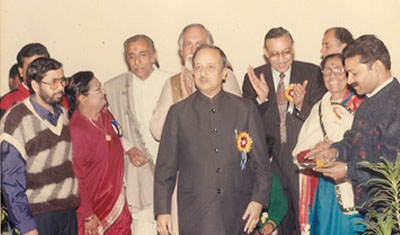
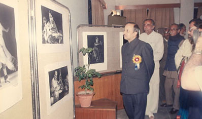
Exhibition of B/W Enlargements of Great Indian Classical Musicians, Dancers , on occasion of 20th "Tansen Tyagraja Sanjeet Samaroh" by Uttar Dakshin Cultural organisaion(UDCO) - 1994 - Lucknow
|
|
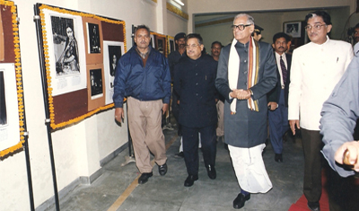
Exhibition on Kathak Dance Festival by State Sangeet Natak Academy - 1998 - Lucknow |
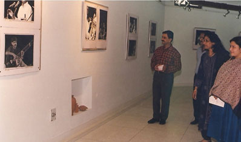
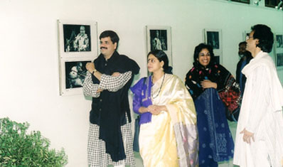
Photo exhibition "VIRASAT" on occasion of 50th Indepandance Day of India North Culture Zone Culture Centre(NCZCC) of India - Allahabad - 1997 |
More Exhibitions
Exhibitions of B/W photographs of Indian Theatre's various oresentations organised by leading theatre group 'DARPAN' of Lucknow in September 1982 in Lucknow.
Exhibition of Theatre Photographs on occasion of National Drama Festival by Cultural Department U.P. in 1985 - Lucknow.
Exhibiton of occasion of State Drama Festival by State Cultural Department in Dehradun - 1986.
-
Exhibition on Occasion of "National KAthak Festival" in ISKON Auditorium, Juhu Mumbai - May 1999.